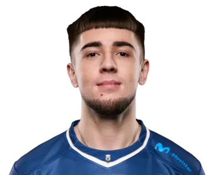
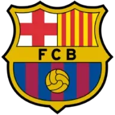

LES · España
En resumen
Los 15 primeros de los 41 jugadores que la LES (España) tiene en el leaderboard, ordenados por el Elo de su mejor cuenta y medidos en euw1. La tabla va de Challenger · 3890 LP a Challenger · 2370 LP. Medido el 2026-09-03.
| # | Jugador | Equipo | Rol | Elo | Victorias | KDA |
|---|---|---|---|---|---|---|
| 1 | Mentos | FLK | Mid | Challenger · 3890 LP | 54 % de 1509 | 2.49 |
| 2 | Hydra | LUA | Mid | Challenger · 3621 LP | 54 % de 1476 | 2.64 |
| 3 | Macaquinho | BAR | Mid | Challenger · 3165 LP | 54 % de 1139 | 2.74 |
| 4 | Kozi | UCAM | Top | Challenger · 3014 LP | 55 % de 834 | 2.25 |
| 5 | Andariel | UCAM | Bot | Challenger · 2971 LP | 56 % de 1130 | 3.12 |
| 6 | Papiteero | HRTS | Top | Challenger · 2940 LP | 54 % de 1851 | 2.40 |
| 7 | Escik | UCAM | Mid | Challenger · 2738 LP | 60 % de 473 | 3.38 |
| 8 | XnS | MKF | Jungle | Challenger · 2731 LP | 53 % de 1199 | 3.20 |
| 9 | Mercy9 | HRTS | Mid | Challenger · 2646 LP | 55 % de 1323 | 2.40 |
| 10 | NightSlayer | MKF | Top | Challenger · 2642 LP | 54 % de 1405 | 2.17 |
| 11 | Lure | HRTS | Bot | Challenger · 2558 LP | 57 % de 1290 | 2.73 |
| 12 | iLEVI | UCAM | Support | Challenger · 2503 LP | 56 % de 912 | 2.92 |
| 13 | Myrtus | MKF | Support | Challenger · 2489 LP | 56 % de 843 | 2.95 |
| 14 |  Fresskowy |
MKF | Mid | Challenger · 2389 LP | 54 % de 1033 | 3.26 |
| 15 | 13 | MKF | Bot | Challenger · 2370 LP | 62 % de 320 | 2.85 |
De esta liga se publica el Elo, no el Riot ID: las cuentas con nombre se indexan cuando un servidor sigue la liga, y ahora mismo eso está hecho en la LEC.
Cuántos de los jugadores de la LES tienen cada campeón entre los que más juegan: Ambessa lo llevan 7, que es el más extendido de la liga. Es presencia, no partidas — el leaderboard dice qué juega cada uno, no cuántas veces.
| Campeón | Jugadores que lo llevan | El de más Elo que lo juega |
|---|---|---|
| Ambessa | 7 | Kozi |
| Jayce | 7 | Mentos |
| Lee Sin | 7 | XnS |
| Nautilus | 7 | Myrtus |
| Rumble | 7 | Kozi |
| Ezreal | 6 | Andariel |
| Bard | 5 | Myrtus |
| Jarvan IV | 5 | XnS |

BAR BAREl próximo partido de la LES, con la hora de inicio en UTC. El primero es MKF contra HRTS, el domingo 6 de septiembre a las 10:00 UTC.
Finals · Bo5
Calendario oficial de la LES en lolesports, leído el 2026-09-03. Las horas de la LES van aquí en UTC, no en hora local: esta página se sirve igual en todo el mundo. A esos mismos jugadores el bot los vigila en euw1 y avisa cuando entran en SoloQ.
Mentos (FLK, Mid), con Challenger · 3890 LP. Es el más alto de los 41 jugadores de la LES que JetaDirectaBot tiene indexados.
41 jugadores en 8 equipos, con unas 141 cuentas de SoloQ entre todos: una media de 3.4 cuentas por jugador. Sale de contar el leaderboard de la LES, no de una estimación.
Sí. JetaDirectaBot avisa en tu canal de Discord con el campeón, el rol, el Elo y el equipo del jugador de la LES en cuanto empieza la partida, sin que tengas que pedir nada.
BAR (BAR), FLK (FLK), GXI (GXI), HRTS (HRTS), LUA (LUA), MKF (MKF), UB (UB), UCAM (UCAM).
Movistar KOI Fénix contra Heretics Academy, el domingo 6 de septiembre a las 10:00 UTC. Es el único que queda publicado en el calendario oficial de lolesports.
De ahora mismo. Es el rango actual de SoloQ de cada jugador, leído del leaderboard de la LES y refrescado con los datos del bot; no es un histórico de la temporada ni el resultado de los partidos oficiales, que son cosas distintas.
JetaDirectaBot publica este aviso en tu canal de Discord —o en tu chat privado— en cuanto el jugador entra en partida, con las 20 ligas del catálogo. Gratis.
El plan gratuito sigue una liga; hasta 4 con los de pago, que es el techo real por el cupo de peticiones de Riot.